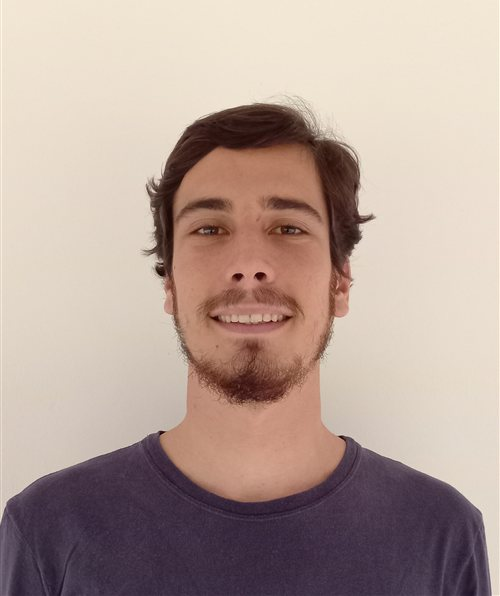

PhD Candidate in Economics · Vrije Universiteit Amsterdam

I am a PhD candidate in the Department of Spatial Economics at Vrije Universiteit Amsterdam, supervised by Steven Poelhekke and Joëlle Noailly. My PhD is funded by the Swiss National Science Foundation.
My research sits at the intersection of development, environmental, and resource economics: I study how natural resources shape firms, workers, and land use, with a focus on Brazil and its administrative data.
Before moving to Amsterdam, I spent several years in applied policy research in Brazil — at the Institute for Applied Economic Research (IPEA) and as a consultant for the World Bank, the Inter-American Development Bank, UNESCO, and the Ministry of Education — working on education finance, inequality, and social policy. I hold an M.Sc. in economics from Universidade Federal Fluminense and a B.A. in economics from Universidade Federal do Rio de Janeiro.
Research interests: Development Economics · Environmental and Resource Economics · Economics of Education · Labor Economics